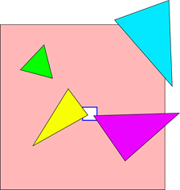

渲染管线之旅|05 图元处理、Clip/Cull, 投影和视图变换
上一篇中我们讨论了关于“纹理和采样”，这一篇我们回到3D管线的前端。在执行完顶点着色之后，就可以实际的渲染东西了，对吗？暂时还不行， 因为在我们实际开始光栅化图元之前，仍然还有很多事要做。所以在本篇里我们不会看到任何光栅化内容——还得等到下次再讲。
1. 图元装载
当我们离开顶点处理流水线时，从着色器单元中得到了一个包含已经着色完成的顶点数据内存块，该内存块中包含一些完整的图元。我们不会让三角形，直线或者补块(pathces)之类的图元被拆分到多个块里面。这一点很重要，因为这意味着我们可以独立地处理每个内存块，并且不需要缓冲多个shader输出块——虽然可以缓冲，但没必要这么做。
下一步是组装属于单个图元的所有顶点(因此称为“图元装载”)。如果该图元恰好是一个点，就只需要读取一个顶点并传递它。如果是线，则读取两个顶点。如果是三角片，则是三个。并以此类推大量控制点的片。
总之，这里做的工作是收集顶点。我们既可以通过读取原始的索引缓冲来收集顶点并存一份顶点索引的拷贝——缓存周围的位置映射，或者我们也可以存储随同着色的顶点完全展开的图元的索引。这将花费一些空间用于存储输出缓冲，但是在这里我们就不必再读取索引了。用哪种方式都可以。
现在我们已经展开构成一个图元的所有顶点。换句话说，我们现在有完整的三角片了，而不只是一堆顶点。那么我们可以光栅化它们了吗？还不是。
2. 视口剔除与裁剪
是的，我猜我们应该先执行这个？这一过程的行为和方法都会像你所期待的那样去完成(即在很多技术文档中描述的那些方法)。我不打算在这里解释三角形裁剪，你可以在任何一本计算机图形课本上查到，尽管通常计算机图形学教科书都是一大堆内容看上去很可怕。如果你想得到一个很好的解释，查阅 Jim Blinn’s的第13章. 你可能会通过传[0，w]的裁剪空间来替代，所以在这一点上别搞混了。
裁剪简而言之就是：在齐次裁剪空间里，从vertex shader中返回齐次裁剪空间中的顶点位置。选用齐次裁剪空间是为了使描述视锥体的方程尽可能的简单。在D3D中，是$-w \le x \le w$，$-w \le y \le w$，$0 \le z \le w$ 和 $0 < w$。注意最后一个方程真正做的是排除齐次点$(0, 0, 0, 0)$，这是一种退化情况。
我们首先需要找出三角形是否部分或完全在这些裁剪平面之外。这可以使用Cohen-Sutherland直线裁剪算法，这方法非常有效，它计算每个顶点的clip ou-code(裁剪输出码)(或称为clip-code, 裁剪码)(这可以在顶点着色时完成，并与位置一起储存)。 然后，对于每个图元，裁剪码clip-code的按位与运算将会告诉所有的视锥平面所有图元顶点在错误的一侧（意味着图元完全的在视锥之外，就可以被抛弃了），并且裁剪码clip-code的按位或运算将会告诉视锥平面需要再次裁剪图元。给出一个clip-code，所需要的硬件资源仅仅时几个简单的逻辑门(gates)硬件。
另外，shader还可以生成一组“剔除距离（cull distances）”（如果所有顶点中任何一个剔除距离小于0，该三角形就会被丢弃），和一组“裁剪距离（clip distances）”（定义了额外的裁剪平面）。这些还用来参考图元的rejection/clip testing。
在实际的裁剪过程中，可以采用两种形式：我们既可以使用多边形裁剪算法（会添加额外的顶点和三角形），也可以添加额外的裁剪边方程到光栅器里（如果听不懂没关系，等到下个部分讲光栅化，就理解了）。后者方式更好，完全不需要实际的多边形裁剪器，但是我们得需要能够规范化32位浮点值来作为有效的顶点坐标；可能会有技巧构建快速的硬件光栅器来这样做，但是似乎很困难。
实际的裁剪过程，可以采取以下两种形式之一：可以使用多边形裁剪算法(会增加额外的顶点和三角形)，或者我们可以添加额外的裁剪边方程到光栅器里(如果这个地方听不懂没关系，等到下一部分我们解释光栅化的时候，你会明白其含义)。后者方式更好，完全不需要实际的多边形裁剪器，但我们需要具备处理标准化的32位浮点值转换为有效的顶点坐标的能力。虽然建立一个快速的硬件光栅化可能可以做到这一点，但是似乎很困难。所以我认为有一个实际的裁剪器，包含了所有相关的东西（生成额外的三角形等）。这很麻烦，还很珍贵（比你想的要珍贵，我马上就会讲到），所以它不是个大问题。不确定是否特殊的硬件也是，或者执行实际的裁剪；专用的裁剪单元的大小和需要多少，取决于在这个阶段派发一个新的顶点着色负载是否合适。我不知道这些问题的答案，但是至少在性能方面，它不是很重要：实际上不会频繁地“真的”裁剪。因为我们会用到保护带裁剪（guard-band clipping）。
3. 保护带裁剪(Guard-band clipping)
这个名字不是很恰当；这不是一个神奇的裁剪方法。事实上，恰恰相反：它直截了当的不做裁剪。
基本思想非常简单：在左，右，上和下裁剪面之外部分的大多数图元完全不需要裁剪。靠GPU来光栅化三角形，实际上的做法是扫描全屏区域（更准确的说，是裁剪区域scissor rect）并询问每个像素：“这个像素被当前三角形覆盖了吗？”(实际上这有点复杂，并且有更高效的方式，但这是常规思路)。并且这同样适用于三角形完全在视口内的情况。只要我们的三角形覆盖测试（coverage test）是可靠的，我们就完全不需要裁剪靠近左，右，上和下平面的部分。
该测试通常都是用固定精度的整数运算。当你将一个三角形的顶点进一步向外移动，最终将会整数溢出，然后你会得到错误的测试结果。那么对于这个结果，我想我们都应该能同意这时候像素应该没有被三角形覆盖，至少，这种危险行为应该是不合法的！实际上它是违反硬件规范的行为。
针对这个问题有两个解决办法：首先是确保绝对不会进行三角形测试。如果真正做到了这点，那么就不用裁剪四个平面了。这就是所谓的“无限保护带”，保护带实际上是无限的。解决方案二是最后裁剪三角形，仅当他们在安全区域（光栅器计算不会溢出的区域）之外时。例如，光栅器有足够的内部位来处理整数三角形坐标：$-32768 \le X \le 32767$ ，$-32768 \le Y \le 32767$ （注意我这里都用大写的X和Y来表示屏幕空间的位置）。仍然用常规的视平面做视口裁剪测试，但实际上在投影和视口变换之后只是裁剪了指定的保护带裁剪平面，结果的坐标都在安全区域里。如图所示：
这个问题有两个解决方案：第一个是确保你的测试不会生成错误结果，无论你输入的怎样的三角形。如果你能处理好这个情况，那么你不需要针对上述四个平面进行裁剪。这被称为“无限保护带”，好吧，保护频带实际上就是无限的。方案二是当三角形即将超出光栅器计算不能溢出的安全范围的时候进行裁剪。例如，假设你的光栅化器有足够的数据空间来处理坐标范围为 的三角形(我将一直使用大写的X和Y表示屏幕空间坐标)。虽然看起来仍然在使用视平面进行视口剔除(即“三角形是否在视锥体之外”)，但实际上仅是针对被选择的保护带裁剪平面进行裁剪，以便在进行了投影和视口转换之后，坐标还处于安全范围内。我想是时候给一张图了：

正如你看到的，实际上三角形必须被裁剪是非常极端的情况。正如上面说的，很少见，没必要担心。
4. 进行正确的裁剪
如果你熟悉算法，至少这的内容不应该令你觉得惊讶，也不应该让你觉得听起来太难。但是细节总是很烦人的。在实践中，三角形裁剪器必须服从一些不显而易见的规则。如果它破坏了这些规则中的任何一个，有时会在共享边缘的相邻三角形之间产生裂缝。这是不允许的。
-
视锥体内的顶点位置必须由裁剪器进行保存，位准确。
-
沿着平面裁剪边
AB与裁剪边BA(定向反转)必须产生相同的结果，位精确。(这可以通过使数学上完全对称，或者总是沿着相同方向进行裁剪来确保)。 -
剪切到多个平面的基元必须始终以相同的顺序与平面进行裁剪。(或者一次裁剪所有平面)
-
如果你使用保护带，你必须针对保护带平面进行裁剪，虽然你不能对一些三角形使用保护带，但如果实际上需要裁剪，则会对原始视口平面进行裁剪。不这样就做会导致产生缝隙，如果我没记错的话，在过去实际上有一块图形硬件存在这个
bug。
5. 那些令人讨厌的远近裁剪面
好吧，虽然我们对上下左右四个平面有一个非常好的解决方案，但是远近平面咋办？特别是近平面很麻烦，因为所有的东西，只是有一点处于视口外，近平面就需要做最多的裁剪。那么我们能怎么做？z保护带平面？但是，这将如何工作，我们实际上不是沿z轴进行光栅化的！事实上，它只是我们内插在三角形的一些值，哔-(人工消音)！
正面的说，虽然它只是我们内插在三角形的一些值。但是事实上，对于z-near测试($ Z <0 $)来说，一旦你插入Z值后真的很容易做，因为它就是个符号位。z-far测试($ Z > 1 $)是一个特别的比较(不是我在这里使用Z而不是z，是因为这些是“屏幕”或投影后的坐标)。但是，我们仍然对每个像素做Z测试，所以这不会是一个较大的额外消耗。用这种方式进行z平面裁剪是一个可靠的方式。但是如果你想支持像NV的‘depth clamp’OpenGL扩展，你需要能够跳过z-near/z-far裁剪。事实上，我认为这个扩展的存在是一个很好的暗示，说明他们正在做这个事，或至少已经使用了一段时间了。
所以我们对规则裁剪平面之一下了个定义：$ 0 < w $。我们可以摆脱它吗？答案是肯定的，使用工作在齐次坐标中的光栅化算法，例如，这个。我不知道是否有硬件使用了这个。虽然这是一个优雅的方式，但该算法似乎很难服从(非常严格！)D3D11光栅化规则。但也许有一些很酷的技巧，我不知道。无论如何，这是关于远近平面的剪裁。
6. 投影与视口转换
投影只是采取x，y和z坐标，并将它们除以w(除非你使用一个均匀的光栅化器实际上没有投影 - 但我会忽略这种可能性在下面)。这给出了-1和1之间的标准化设备坐标或NDC(Normalized device coordinates)。然后应用视口变换，将投影的x和y映射到像素坐标(称为X和Y)，将投影的z映射到范围[0, 1](称为该值Z)，这样在z-near平面Z=0并且在z-far平面Z=1。
我们还要对齐像素到子像素格上的小数坐标。从D3D11开始，硬件需要精确的8位三角形坐标的子像素精度。这个对齐会把一些非常窄的碎片（这些碎片会导致问题）变成退化三角形（不需要被渲染）。
7. 背面和其他三角形剔除
当我们拥有了所有顶点的X和Y，我们就可以叉乘边向量来计算标记的三角形面积。如果面积是负值，三角形就是逆时针的（在这里负面积对应逆时针，因为我们正处于像素坐标空间，在D3D的像素空间中y向下增加而不是向上增加，所以符号是相反的）。如果面积是正值，就是顺时针。如果是0，就是退化三角形，不覆盖任何像素，那么它就可以被安全的剔除了。我们知道了三角形朝向就可以进行背面裁剪了（开启的情况下）。
我们现在快准备好光栅化了。实际上我们还得先设置好三角形。但这块还需要光栅化如何执行的知识，所以我会把放到下一篇再讲。
8. 最后的评论
我跳过并简化了一部分内容，实际情况要更复杂：比如，我假设你只是使用常规的齐次裁剪算法。通常是这样——但你可以用一些vertex shader属性标记作为使用屏幕空间线性插值来替代透视矫正插值。目前，常规齐次裁剪都是透视矫正插值；在使用屏幕空间线性属性的时，你实际上需要执行一些额外的工作来不进行透视矫正:）
有很多光栅化算法（比如我提过的Olanos 2DH方法）可以让你跳过几乎所有的裁剪，但如前所述，D3D11对于三角形光栅器需求很严格，所有没有很多硬件实现的余地；我不确定那些方法是否符合规范（有很多细节下次会介绍）。我用的方法不是很先进，在光栅器中逐像素处理上用到少量的数学运算。如果你知道更好的解决方案，请在评论中告诉我。
最后，三角形剔除我这里描述的是最基本情况；例如，一类三角形在光栅化时会生成零个像素远大于零面积的三角形，如果你可以足够快的查找到它，你就可以立即丢弃掉这个三角形并且不需要经过三角形设置。最后说一点，在三角形设置之前以最低限度的光栅化进行剔除——找到其它方法来早期拒绝（early-reject）三角形是相当值得的。
- 原文作者：Binean
- 原文链接：https://bzhou830.github.io/post/20190720%E6%B8%B2%E6%9F%93%E7%AE%A1%E7%BA%BF%E4%B9%8B%E6%97%8505/
- 版权声明：本作品采用知识共享署名-非商业性使用-禁止演绎 4.0 国际许可协议进行许可，非商业转载请注明出处（作者，原文链接），商业转载请联系作者获得授权。